|
|
| nudibranchs text index | photo index |
| Phylum Mollusca > Class Gastropoda > sea slugs > Order Nudibranchia |
| Bohol
nudibranch Discodoris boholiensis Family Discodoridae updated May 2020 Where seen? This large flat nudibranch is often seen on many of our shores, usually near coral rubble or reefs. Sometimes, several may be seen during one visit. It is named after the Bohol Islands in the Philippines. Features: 6-10cm long. The hard body is broad and rather thin and flat, and covered with small brown-tipped bumps. Distinguished by the prominent hump along the centre of the otherwise flat animal. Patterns and colours are quite variable, generally brownish to black with paler markings. The flower-like gills are dark brown with white lines. Rhinophores large and thick with white stripes and bars. Avoid handling the animal as it easily breaks off (autotomises) portions of its body (mantle skirt). Under the mantle skirt is the foot with another pair of tentacles. What does it eat? It eats sponges. |
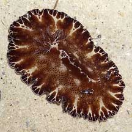 Sentosa, Jan 06 |
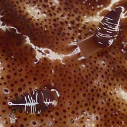 Rhinophores. |
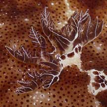 Feathery gills. |
|
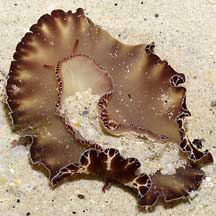 Underside. |
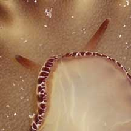 A pair of tentacles on the underside. |
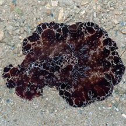 Chunks of the body broken off, but still alive. Pulau Semakau, Jan 05 |
 |
| Nudibranch babies: Nudibranchs
are simultaneous hermaphrodites, that is, each animal has both male
and female reproductive organs at the same time. They practice internal
fertilisation. So each nudibranch has a complex system of tubes to
avoid self fertilisation, to introduce sperm while at the same time
receiving sperm from a partner, and for laying eggs. They mate in pairs, lining up side-by-side, facing opposite directions in order to exchange sperm. Then they go their separate ways and each lays its egg mass, usually on the prey that they eat or on a hard surface nearby. Eggs are pinkish orange, ribbon-like, laid in a rosette. |
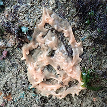 Egg ribbon laid by the nudibranch. Changi, Jan 20 |
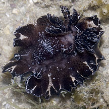 Tiny one. Cyrene, Jun 08 |
| Bohol nudibranchs on Singapore shores |
On wildsingapore
flickr
|
| Other sightings on Singapore shores |
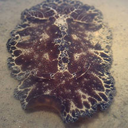 Changi, May 18 Photo shared by Jianlin Liu on facebook. |
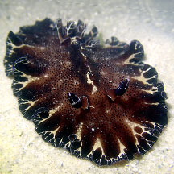 Cyrene, Feb 26 Photo shared by Jianlin Liu on facebook. |
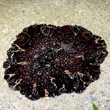 Terumbu Pempang Laut, Dec 18 Photo shared by Jianlin Liu on facebook. |
| uw spectacular discodoris nudibranch @ cyrene from SgBeachBum on Vimeo. |
Links
|